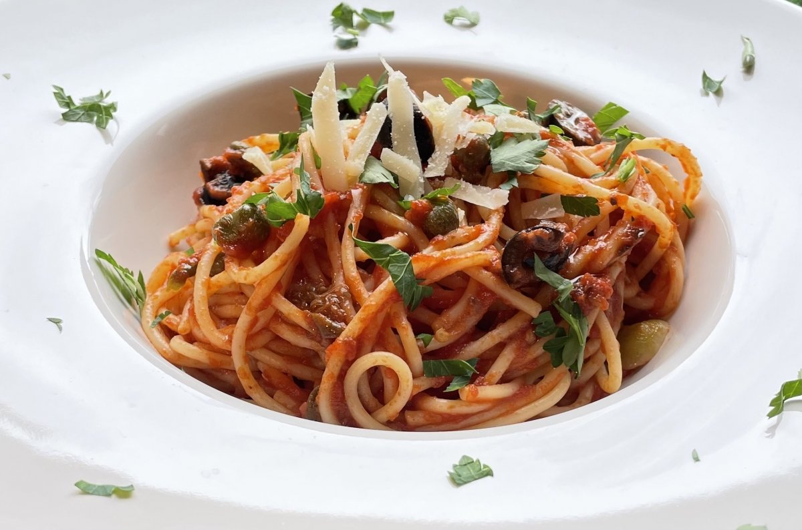

La Spaghetti alla Puttanesca es una receta tradicional de la cocina italiana, especialmente asociada a la región de Campania. Es un plato sencillo, intenso y muy aromático, caracterizado por la combinación de tomate, aceitunas, alcaparras y anchoas.

Es una receta que permite preparar un plato de pasta con pocos ingredientes y sin necesidad de realizar elaboraciones complicadas. Además, sus ingredientes aportan sabores muy diferentes que, combinados, producen una salsa con mucha personalidad.
Ingredientes
Para preparar Spaghetti alla Puttanesca para 4 personas necesitamos los siguientes ingredientes:
- 400 g de espaguetis
- 400 g de tomate triturado
- 100 g de aceitunas negras
- 2 cucharadas de alcaparras
- 4 filetes de anchoa
- 2 dientes de ajo
- 4 cucharadas de aceite de oliva virgen extra
- 1 guindilla pequeña
- Perejil fresco
- Sal
- Pimienta negra
Es importante utilizar ingredientes de buena calidad, especialmente el aceite de oliva, el tomate y las aceitunas, ya que son algunos de los elementos principales de la salsa.
Las cantidades pueden modificarse ligeramente dependiendo del gusto de cada persona. Por ejemplo, podemos aumentar la cantidad de guindilla si queremos conseguir un plato más picante.
Preparación
Lo primero que debemos hacer es poner una olla grande con abundante agua al fuego. Cuando el agua comience a hervir, añadimos sal y, posteriormente, incorporamos los espaguetis.
Mientras se cuece la pasta, podemos comenzar a preparar la salsa. En una sartén amplia añadimos el aceite de oliva y los dientes de ajo picados. Cocinamos durante unos minutos a fuego medio, procurando que el ajo no llegue a quemarse.
A continuación, incorporamos las anchoas y la guindilla. Removemos lentamente para que las anchoas se deshagan y se mezclen con el aceite. De esta manera conseguiremos una base muy sabrosa para nuestra salsa.
Después añadimos las aceitunas negras y las alcaparras. Removemos todos los ingredientes y dejamos que se cocinen durante unos minutos para que los sabores comiencen a mezclarse.
La salsa de tomate
Cuando los ingredientes anteriores estén bien integrados, añadimos el tomate triturado a la sartén.
Dejamos cocinar la salsa a fuego medio durante aproximadamente 10 o 15 minutos. Durante este tiempo podemos remover de vez en cuando y comprobar que la salsa va adquiriendo una textura más espesa.
Podemos añadir un poco de pimienta negra, aunque debemos tener cuidado con la sal porque las anchoas y las alcaparras ya aportan bastante sabor.
Cocción de la pasta
Los espaguetis deben cocinarse siguiendo las indicaciones del fabricante. Lo ideal es conseguir una pasta al dente, es decir, cocinada pero manteniendo cierta firmeza al morderla.
Cuando la pasta esté preparada, la escurrimos, reservando previamente un poco del agua de cocción.
A continuación incorporamos los espaguetis directamente a la sartén donde tenemos preparada la salsa. Mezclamos todo durante uno o dos minutos para conseguir que la pasta quede bien cubierta.
Si la salsa está demasiado espesa, podemos añadir una pequeña cantidad del agua de cocción que habíamos reservado.
Presentación
Una vez terminada la receta, servimos los espaguetis inmediatamente.
Podemos decorar el plato con un poco de perejil fresco picado y añadir unas aceitunas negras por encima. También podemos incorporar un pequeño chorrito de aceite de oliva virgen extra antes de servir.
El resultado debe ser un plato de pasta con una salsa de tomate intensa, ligeramente picante y con el sabor característico de las aceitunas, las alcaparras y las anchoas.
Un poco de historia
La procedencia exacta del nombre "puttanesca" ha dado lugar a diferentes historias y explicaciones. Lo que sí caracteriza a esta receta es su sencillez y el uso de ingredientes habituales de la despensa mediterránea.